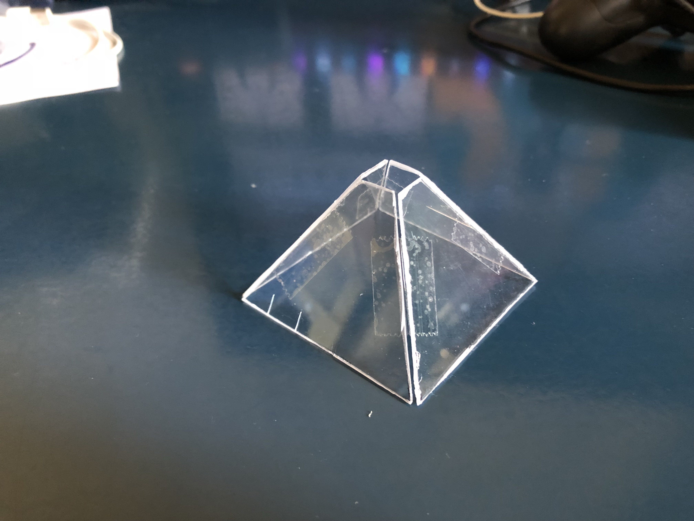
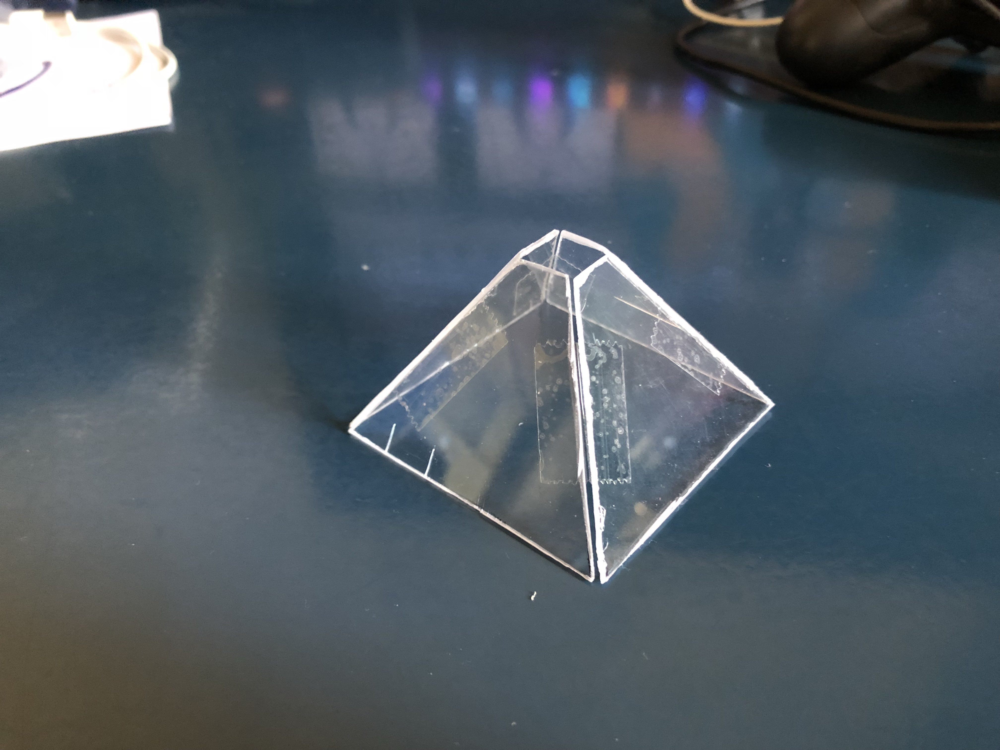
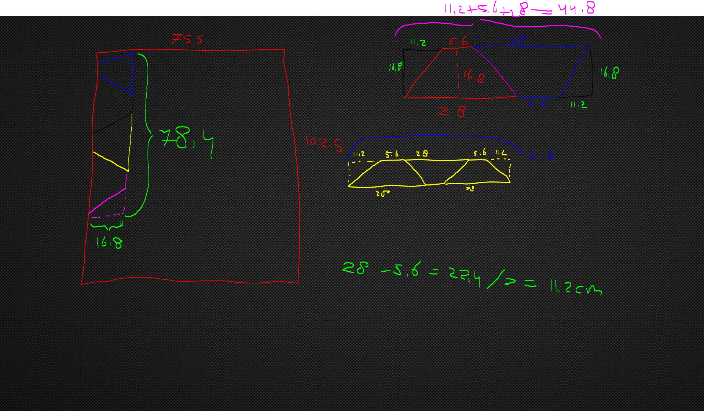
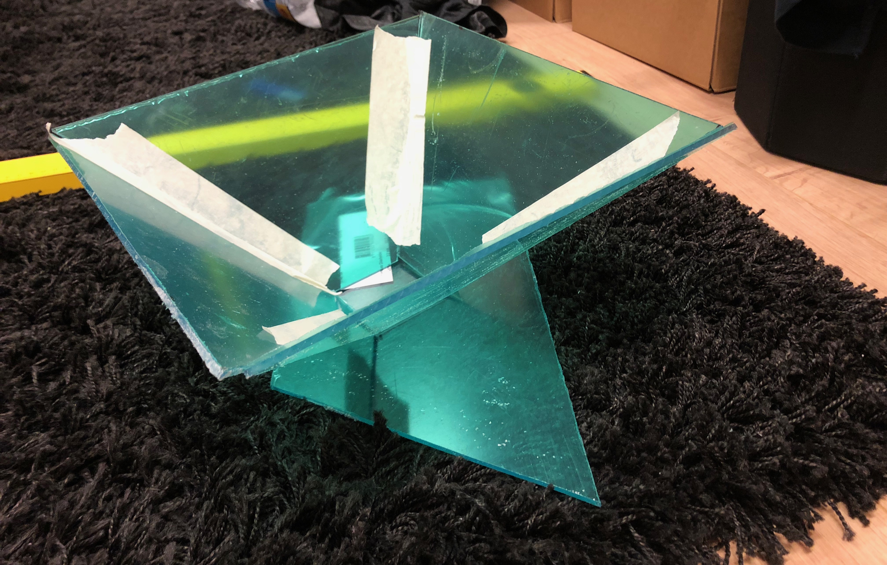

Physical Prototype
 

For my prototyping assignment i am making the prisms that are used for prism holograms. Our group also needs these for our project since we are making holograms for our client.
There will be most likely 3 different prisms i have made at the end of this semester, 2 of these i have already made and are shown in the pictures above.
The next iteration will be made during this week or next week.
The first image is my first try of making a prism out of plastic, i had a plastic packaging left from a door lock and cut it in the pieces i needed for making a prism. The plastic was quite flexible, lightweight and easy to cut.
I then tested it with a few users to see what they thought about it when trying to use it for a hologram.
They said that it was sturdy, easy to use but the plastic was not completely see through which made the holograms not look as good as they could be.
The second image is my first iteration which is the same dimensions as the previous prism but with a different material and a different way of applying the tape to hold it together.
This prism is made out of the plastic of a cd case, this made the prism a lot harder to make since it took me quite a long time cutting out all the pieces with a stanley knife compared to the other prism. The benefit of this prism compared to the other one is that the plastic is a lot clearer and so makes the holograms come out better.
I also tested this prism with a few users and they thought as well that the clearer plastic is a lot better for the holograms but there were also some issues, the main issue was that the plastic tape that i applied on this prism differently from the rest, made it harder to keep it in shape on their mobile phone since it was not as sturdy as the previous one. This issue can be easily fixed by changing the way i applied the tape. Tape on the outside instead of the inside.
Final version
 
I have completed my final version of the physical prototype.
This prototype is more than 20 times as big as the other 2 prototypes and was also a lot more work to make. I started off by calculating how big each side should be to keep the same ratio as the smaller prototypes.
After this i sketched how i should saw all the pieces in the most effecient way out of an acrylic plate. While sawing the plate i got the blade so hot that the plastic glued itself back to itself but at last with some effort i got all the pieces i needed and made the prism.
I tested the prism with a few users when i had it setup correctly and it worked okay but it could have been better.
Most of the problems with viewing the hologram was that the plastic was blurrying the image/video so it made it up close a little harder to see but not too noticeable from a distance.
Furthermore the plastic somehow didn't want to project the hologram on 2 opposite sides, still no clue why but the other 2 sides worked fine.
If i ever make another prism like this i will do some more research into what kind of plastic is most viable for viewing holograms and set it up so that it can be used upside down and prevent people using it as a trash bin.
Reflection
From making these prototypes i learned a lot.
Doing some research into each material that you are gonna use is crucial for delivering a good product since you could spend a lot of time making a prototype and at the end figure out there were better materials that could boost your prototype's performance.
Also noticing how each tester approaches your prototype for the first time can say a lot or give you feedback without even anything being said, like everyone kneeling to see the hologram could let you as builder know that the product should be displayed differently in which each tester doesn't have to make a special movement to see it.
Storyboard
This storyboard is made by me and is supposed to show the journey that a person or customer would have when finding out who Aisha is.
The first picture is used to seek attention from potential fans of Aisha.
To describe the drawing a bit better, there is an advertisement of Aisha on a screen or wall at a train station. Since Aisha's target audience are most likely students i think that putting an advertisement on a train station where students come multiple times everyday would be a great point to get some more popularity.
The second picture shows a potential fan searching for Aisha on wikipedia to see who she is.
The third picture shows the same potential fan discovering that Aisha has a spotify where he can listen to her songs.
The fourth picture shows the fan searching for information where Aisha will be performing since he would like to attend, he does this by going to her instagram.
The fifth picture shows the fan ordering tickets to the performance of Aisha.
The sixth picture shows the fan attending the performance of Aisha.
Reflection
From making this storyboard i have learned how it is useful to make it clear for fellow teammembers and most importantly yourself how you would like to setup the journey of a potential customer for your product.
When you have a clear picture of how it should be going you can progress into making it happen while following the steps you made in the storyboard.
I will definitely use this technique for probably every big project i am going to make.
I have also made a storyboard during my selfie week, this helped me putting the pieces together and help myself get a clear picture of what i am going to make.